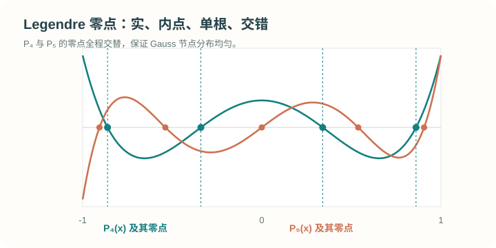
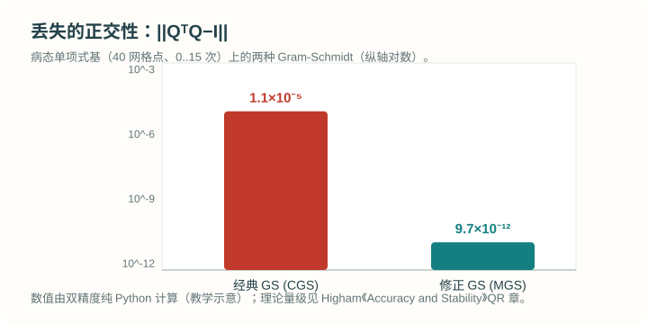

CHAPTER 14 · NUMERICAL ANALYSIS
正交多项式：递推、零点与 Gauss 求积的桥梁
第 12 章直接用 Legendre 零点做 Gauss 节点，但没有解释它们为何最优、又如何被稳定地算出来。本章补上这条理论链：为什么不能用单项式基、三项递推为什么稳定、零点有哪些性质，以及带余除法如何把 2m−1 次精度“证明”出来。
01 · 单项式基底为什么不可用
在第 08 章的最佳平方逼近里，我们要把 f 投影到多项式空间。如果直接用单项式基底 1, x, x², …，法方程里的 Gram 矩阵元素是 ∫x^{i+j}w dx，在 [0,1]、w=1 下就是 Hilbert 型矩阵 1/(i+j+1)。这类矩阵的条件数随阶数急速增长，加上法方程会把条件数平方（κ(AᵀA)=κ(A)²），高次逼近在数值上直接崩掉。
正交基底的用处就是把 Gram 矩阵变成对角阵。若基底满足
系数就变成独立的分量比，n 个系数可以 O(n) 得到，而不是解一个病态方程组。问题于是转向：如何稳定地构造这些多项式。
02 · 三项递推：稳定的构造
所有正交多项式族（首一形式）都满足同一个三项递推，它只用到前两个多项式，不需要显式写出高阶系数：
其中系数只由内积确定：
四大经典族的首一递推系数（供对照）：
| 名称 | 区间 | 权函数 w(x) | α_k | β_k |
|---|---|---|---|---|
| Legendre Pₖ | [−1,1] | 1 | 0 | k²/(4k²−1) |
| Chebyshev Tₖ | [−1,1] | 1/√(1−x²) | 0 | 1/2 (k=1)，1/4 (k≥2) |
| Laguerre Lₖ | [0,∞) | e^{−x} | 2k+1 | k² |
| Hermite Hₖ | (−∞,∞) | e^{−x²} | 0 | k/2 |
为什么不用 Rodrigues 公式或显式系数直接算？因为高阶系数的显式计算会重新引入病态的大数相消，而三项递推每步只做一次乘减，误差不累积放大。更进一步，求节点可转为一个对称三对角矩阵的特征值问题（对角元 α_k、次对角元 √β_k，即 Jacobi 矩阵），用稳定算法求解。SciPy 的 roots_legendre 正是基于这一思路。同一次特征分解还顺带给出权重（Golub–Welsch）：第 i 个节点就是 Jacobi 矩阵的第 i 个特征值 xᵢ，而对应权重等于零阶矩 μ₀=∫w(x)dx 乘以该特征值单位特征向量首分量的平方，即 wᵢ=μ₀·(vᵢ)₁²。于是节点与权重来自同一个对称特征问题，不必再单独解矩方程组。

α_k、√β_k 组成对称三对角 Jacobi 矩阵 J：第 i 个特征值就是第 i 个 Gauss 节点 xᵢ，而权重 wᵢ=μ₀·(vᵢ)₁² 由对应单位特征向量的首分量平方乘总质量 μ₀ 得到。03 · 零点的四个性质
正交多项式的零点有一组很好的性质，它们直接决定了 Gauss 求积节点的质量：
- 实根性：
m次正交多项式的m个零点全为实数。 - 区间性：所有零点都落在正交区间的内部，不落在端点上。
- 单根性：所有零点都是单重根，导数不为零。
- 交错性：
φ_m与φ_{m+1}的零点互相交错。

P₄（青）与 P₅（橙）的零点都在 (−1,1) 内部且相互交错。零点的分布密度与权函数 w 有关：权大的地方零点更密。区间性排除了“节点跑到端点”的退化情形；交错性保证节点不会聚成一堆。而零点密度跟随权函数这一点，恰好解释了为什么 Chebyshev 节点在端点附近更密——那里权 1/√(1−x²) 最大。
04 · Gram-Schmidt：为什么要修正版本
如果手上只有一组普通基底（如 1, x, x², …），可以用 Gram-Schmidt 逐列正交化。做法有两种：经典 Gram-Schmidt（CGS）先算完所有投影系数再一次性相减；修正 Gram-Schmidt（MGS）每减去一个投影分量就用新向量继续算下一个系数。数学上两者等价，数值上却差很远。
CGS 在算第 k 列的投影时，用的是“已经很脏”的前列，舍入误差被后续步骤反复引用并放大；理论分析表明它的正交性丢失约为 κ²(A)·ε，而 MGS 约为 κ(A)·ε——后者少了一个条件数因子。下面用病态的单项式基底实测。

0 到 15 次）上，‖QᵀQ−I‖ 的实测值：CGS 约 1.1×10⁻⁵，MGS 约 9.7×10⁻¹²（双精度教学示意）。05 · 为什么零点是最优节点
把第 12 章的结论补上证明。取 m 个节点、节点取为 φ_m 的零点。任取一个次数 ≤2m−1 的多项式 p，用 φ_m 做带余除法：
两边乘权函数积分。商项因为 deg q≤m−1 而与 φ_m 正交，积分为零，于是原积分等于余式的积分。而在 φ_m 的零点处 φ_m(xᵢ)=0，所以 p(xᵢ)=r(xᵢ)；又因为 r 次数 ≤m−1，m 个节点的插值型求积能精确积分它。串起来就是
关键在于正交性把“高次”的 q·φ_m 部分直接抹去，问题退化为低次余式。这就是 2m−1 次代数精度的根本原因，也解释了为什么节点必须恰好是正交多项式的零点。
06 · 实验与失败边界
用三项递推加 Newton 迭代求 P_m 的零点，可以验证：它们与第 12 章的 Gauss 节点一致，并能精确积分到 2m−1 次。
import math
def legendre_pair(x, m): # 三项递推：返回 (P_m(x), P_{m-1}(x))
if m == 0:
return 1.0, 0.0
p_prev, p = 1.0, x
for k in range(1, m):
p_prev, p = p, ((2*k + 1) * x * p - k * p_prev) / (k + 1)
return p, p_prev
def legendre_roots(m):
out = []
for i in range(m):
x = math.cos(math.pi * (i + 0.75) / (m + 0.5))
for _ in range(100):
pm, pm1 = legendre_pair(x, m)
d = m * (x * pm - pm1) / (x * x - 1)
x -= pm / d
out.append(x)
return sorted(out)
r4 = legendre_roots(4) # 应与第 12 章的 Gauss 节点一致
assert abs(r4[0] + 0.8611363116) < 1e-8 and abs(r4[3] - 0.8611363116) < 1e-8
w = [0.3478548451374538, 0.6521451548625461, 0.6521451548625461, 0.3478548451374538]
assert abs(sum(wi * ri**4 for wi, ri in zip(w, r4)) - 2/5) < 1e-14 # 2m-1 = 7 覆盖 4 次
print(r4)失败边界。正交多项式的零点性质依赖权函数 w(x)≥0（几乎处处）。若权函数变号，理论不再成立，零点可能超出区间甚至为复根。此外，Gram-Schmidt 本身在病态基上不稳定（图 3），因此实际构造高阶级数应优先用三项递推，QR 分解优先用 Householder。
原始资料与延伸阅读
本章将文献结论与本文独立构造的数值示例严格区分；表格与图示为教学演示。
- NIST DLMF §3.5 · Quadrature：正交多项式零点与 Gauss 求积的代数精度。
- Nicholas J. Higham, Accuracy and Stability of Numerical Algorithms。SIAM 第二版，2002；经典与修正 Gram-Schmidt 的正交性丢失分析（QR 章）。
- SciPy · scipy.special.roots_legendre：基于 Jacobi 矩阵特征值的稳定节点与权重计算。